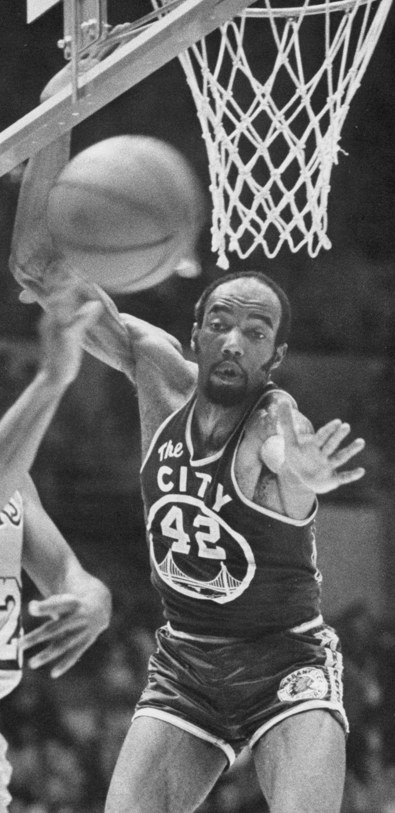
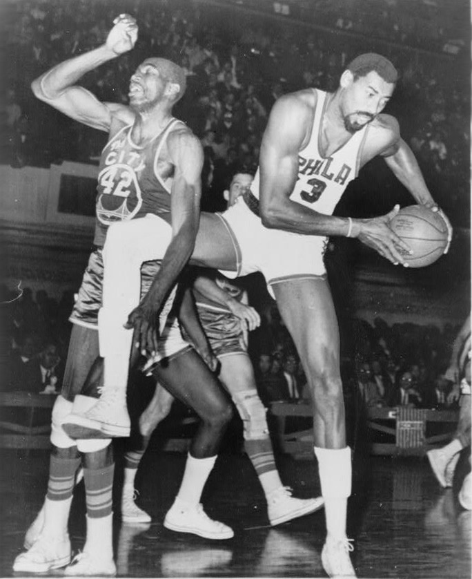
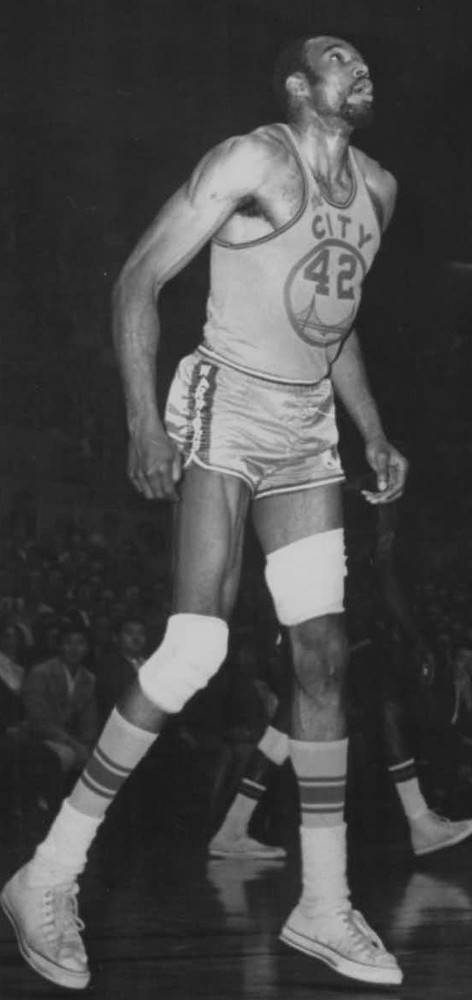
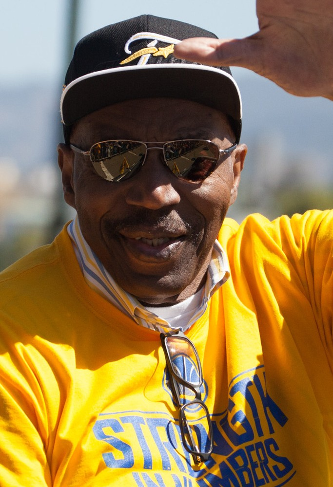

Nate “The Great” Thurmond
Kareem called him the toughest he ever faced. For eleven years he owned the paint for the Warriors, then stayed in San Francisco for the rest of his life.
The Nate Thurmond Story
Before Steph, before Barry's sweep, there was a 6 foot 11 center from Akron who made San Francisco proud to have a basketball team. Nate Thurmond was the Warriors for eleven seasons, and the best big men of his time said he was the hardest guy they ever had to play.
He was born July 25, 1941, in Akron, Ohio, and played high school ball with Gus Johnson. He turned down Ohio State so he wouldn't sit behind Jerry Lucas and went to Bowling Green, where he led the conference in rebounding all three varsity years.
The San Francisco Warriors drafted him third overall in 1963. As a rookie he backed up Wilt Chamberlain, made the All Rookie team, and the Warriors went to the 1964 Finals. Midway through the next season the Warriors traded Wilt, and the middle was all Nate's.
He went off. On February 28, 1965, at Baltimore, he pulled down 18 rebounds in one quarter, an NBA record that still stands. On November 9, 1965, he grabbed 42 against Detroit. Only Wilt, Bill Russell and Jerry Lucas ever had 40 in a game.
In 1966/67 he averaged 21.3 rebounds and finished second to Chamberlain in MVP voting, and he and Rick Barry took the Warriors back to the Finals against Wilt's 76ers. He averaged 23.1 rebounds in those playoffs. In Game 6 he crashed into the basket support chasing a layup and had to leave, and the Warriors lost by three.
Then he became a scorer too, averaging more than 20 points a game for five straight seasons from 1967/68 through 1971/72. His best year was 1968/69, at 21.5 points and 19.7 rebounds. He played in seven All Star Games as a Warrior and made the All Defensive team five times.
Kareem Abdul Jabbar called him the toughest defender he ever faced. Thurmond knew people overlooked him because he wasn't flashy. He didn't care much. He said he never wanted to walk off a court where his opponent didn't respect him.
In September 1974 the Warriors traded him to Chicago for Clifford Ray. In his first game as a Bull he had 22 points, 14 rebounds, 13 assists and 12 blocks, the first official quadruple double in NBA history. That spring, the Warriors beat his Bulls in Game 7 of the West finals on the way to the 1975 title.
He finished his career in Cleveland, where he helped the 1976 Cavaliers, the Miracle of Richfield team, reach the conference finals. He retired after 1976/77 with career averages of 15.0 points and 15.0 rebounds.
The Warriors retired number 42 on March 8, 1978, and the Cavaliers retired it too. He went into the Hall of Fame in 1985 and was named to the NBA's 50th and 75th anniversary teams.
He never left San Francisco. He opened Big Nate's BBQ and ran it for 20 years, served the Warriors as a legend and ambassador, and rode in the 2015 championship parade. He died of leukemia on July 16, 2016, nine days before his 75th birthday, and the Warriors wore his number on their jerseys that season.
What He Meant to Us
Nate Thurmond is the Warrior I wish I'd seen live more than anybody. You read about him and every story sounds made up. Eighteen rebounds in a quarter. Forty two in a game. Kareem saying nobody played him better.
What kills me is the timing. He spent eleven years carrying this franchise, two trips to the Finals, and the Warriors traded him the summer before they won it all. And they beat his Bulls in Game 7 to get there. That's brutal. I don't know how you watch that.
But he stayed. That's the part I love most. He opened a barbecue place in the city, he worked for the team, he showed up at the parade in 2015 in sunglasses and a Warriors cap, grinning like a kid. He was ours his whole life.
When the team patched 42 on the jerseys in 2016, I thought that was exactly right. Number 42 is up there with Barry's 24 and Wilt's 13, and he belongs in that company.
In Pictures



Why He Was Clutch
Thurmond's clutch was the other team's best player having a bad night. Kareem said when he scored on Nate, he knew he'd done something. Walt Hazzard said guys would grab an offensive rebound and back out 15 feet just to get a shot off, because they knew Nate was there.
He was at his best when the season was on the line. In the 1967 playoffs he averaged 23.1 rebounds over 15 games, against Wilt in the Finals. In the 1972 playoffs against Milwaukee and a young Kareem, he averaged 25.4 points and 17.8 rebounds.
Even at the end, when he was 34 and coming off the bench, he gave Cleveland the lift that turned a 6 and 11 team into the Miracle of Richfield. Big games found Nate Thurmond, and he answered.
Clutch Moments
- February 28, 1965
18 rebounds in a quarter
At Baltimore, Thurmond grabbed 18 rebounds in a single quarter, breaking the record of 17 held by Russell and Chamberlain. Nobody has topped it since.
- November 9, 1965
42 rebounds against Detroit
Thurmond pulled down 42 rebounds against the Pistons, the best single game of his career. Only Wilt Chamberlain, Bill Russell and Jerry Lucas have ever had 40 or more in an NBA game.
- 1967 playoffs
Taking it to Wilt in the Finals
Thurmond averaged 23.1 rebounds in 15 playoff games as the Warriors reached the Finals against Chamberlain's 76ers. In Game 6 he went down hard into the basket support defending a layup and had to leave, and the Warriors lost 125 to 122.
- 1971/72 season
51 wins in the first Golden State season
In the first season under the Golden State name, Thurmond averaged 21.4 points and 16.1 rebounds and the Warriors went 51 and 31. In the playoffs against Kareem and Milwaukee he averaged 25.4 points and 17.8 rebounds.
- 1974/75 opener
The first quadruple double
In his debut with the Chicago Bulls, Thurmond had 22 points, 14 rebounds, 13 assists and 12 blocked shots, the first official quadruple double in NBA history.
- March 8, 1978
Number 42 goes up
Less than two years after he retired, the Warriors raised his number 42 to the rafters.
- June 19, 2015
One more parade
Forty years after the title he just missed, Thurmond rode in the Warriors championship parade, wearing a Warriors cap and a huge smile.
The Highlights
What They Said About Thurmond
“The other players think I’m the best defensive big man in professional basketball,”
“He plays me better than anybody ever has,”
“When I score on Nate, I know I’ve done something. He sweats and he wants you to sweat, too.”
“Nate was one of the greatest centers to ever play the game and I was privileged to call him a teammate and dear friend. He battled his illness until the very end, like a true Warrior.”
“He played with unbelievable intensity and was simply a man among boys on most nights, especially on the defensive end.”
“Looking back, he was as ferocious as any player in the history of the game on the court, but one of the kindest and nicest souls in his everyday life.”
Career Stats
| Year | Team | G | MP | PTS | REB | AST | STL | BLK | FG% | FT% |
|---|---|---|---|---|---|---|---|---|---|---|
| 1963/64 | SFW | 76 | 25.9 | 7.0 | 10.4 | 1.1 | .395 | .549 | ||
| 1964/65 | SFW | 77 | 41.2 | 16.5 | 18.1 | 2.0 | .419 | .658 | ||
| 1965/66 | SFW | 73 | 39.6 | 16.3 | 18.0 | 1.5 | .406 | .654 | ||
| 1966/67 | SFW | 65 | 42.5 | 18.7 | 21.3 | 2.6 | .437 | .629 | ||
| 1967/68 | SFW | 51 | 43.6 | 20.5 | 22.0 | 4.2 | .411 | .644 | ||
| 1968/69 | SFW | 71 | 45.2 | 21.5 | 19.7 | 3.6 | .410 | .615 | ||
| 1969/70 | SFW | 43 | 44.6 | 21.9 | 17.7 | 3.5 | .414 | .754 | ||
| 1970/71 | SFW | 82 | 40.9 | 20.0 | 13.8 | 3.1 | .445 | .730 | ||
| 1971/72 | GS | 78 | 43.1 | 21.4 | 16.1 | 2.9 | .432 | .743 | ||
| 1972/73 | GS | 79 | 43.3 | 17.1 | 17.1 | 3.5 | .446 | .718 | ||
| 1973/74 | GS | 62 | 39.7 | 13.0 | 14.2 | 2.7 | 0.7 | 2.9 | .444 | .666 |
| 1974/75 | CHI | 80 | 34.5 | 7.9 | 11.3 | 4.1 | 0.6 | 2.4 | .364 | .589 |
| 1975/76 | CHI | 13 | 20.0 | 3.7 | 5.5 | 2.0 | 0.3 | 0.9 | .444 | .444 |
| 1975/76 | CLE | 65 | 17.4 | 4.6 | 5.3 | 1.0 | 0.3 | 1.3 | .418 | .514 |
| 1976/77 | CLE | 49 | 20.3 | 5.5 | 7.6 | 1.7 | 0.3 | 1.7 | .407 | .642 |
| Career | 964 | 37.2 | 15.0 | 15.0 | 2.7 | 0.5 | 2.1 | .421 | .667 |
Per game averages except G. Steals and blocks weren't counted until 1973/74. In 1975/76 he played 13 games for Chicago and 65 for Cleveland. Warriors only, 757 games: 17.4 points and 16.9 rebounds. Scroll the table sideways on a phone.
Playoffs, per game
| Year | Team | G | MP | PTS | REB | AST | STL | BLK | FG% | FT% |
|---|---|---|---|---|---|---|---|---|---|---|
| 1963/64 | SFW | 12 | 34.2 | 10.0 | 12.3 | 0.8 | .438 | .679 | ||
| 1966/67 | SFW | 15 | 46.0 | 15.9 | 23.1 | 3.1 | .433 | .571 | ||
| 1968/69 | SFW | 6 | 43.8 | 16.7 | 19.5 | 4.7 | .392 | .588 | ||
| 1970/71 | SFW | 5 | 38.4 | 17.6 | 10.2 | 3.0 | .371 | .800 | ||
| 1971/72 | GS | 5 | 46.0 | 25.4 | 17.8 | 5.2 | .434 | .750 | ||
| 1972/73 | GS | 11 | 41.8 | 14.5 | 13.2 | 3.6 | .398 | .800 | ||
| 1974/75 | CHI | 13 | 19.5 | 3.5 | 6.7 | 2.4 | 0.4 | 1.6 | .368 | .486 |
| 1975/76 | CLE | 13 | 28.8 | 6.7 | 9.0 | 2.2 | 0.5 | 2.2 | .468 | .406 |
| 1976/77 | CLE | 1 | 1.0 | 0.0 | 1.0 | 0.0 | 0.0 | 1.0 | ||
| Career | 81 | 35.5 | 11.9 | 13.6 | 2.8 | 0.4 | 1.9 | .416 | .621 |